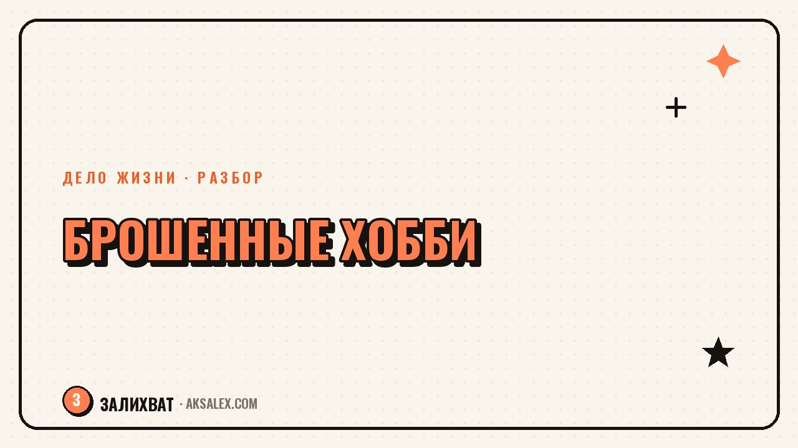

Чувство вины за брошенные хобби: как перестать

У многих за плечами список недоделанного: курсы вышивки, которые забросил через месяц, гитара в углу комнаты, блог о путешествиях с тремя постами. Это часто превращается в тихий внутренний укор: раз ничего не довёл до конца, значит, со мной что-то не так. Разберём, откуда берётся эта вина, почему она необязательно справедлива и как прошлые брошенные увлечения иногда подсказывают, в какую сторону двигаться дальше.
Почему вина за брошенные хобби мешает, а не помогает
Логика «я бросил - значит, я не умею доводить дело до конца» звучит убедительно, но редко отражает правду. Хобби бросают по десяткам разных причин: не хватило времени, не было подходящего учителя, увлечение выполнило свою задачу - например, помогло пережить трудный период - и само отпустило. Но мозг склонен сворачивать все эти разные истории в одну простую и обвинительную.
Проблема не в самом факте, что хобби не стало постоянным делом жизни. Проблема в том, что вина за это тратит силы, которые можно направить на поиск того, что действительно откликается сейчас. Чем дольше человек казнит себя за прошлое, тем меньше у него остаётся энергии пробовать новое.
Вопросы, которые стоит задать себе вместо самокритики
- Что конкретно я получил от этого хобби, пока занимался им - даже если бросил через месяц?
- Было ли это решение о паузе или я просто перестал находить время и не заметил этого?
- Что изменилось в моей жизни, из-за чего увлечение перестало откликаться?
Откуда берётся это чувство
Часто вина растёт из установки, что любое начатое дело нужно доводить до результата, иначе оно не считается. Эта установка редко приходит сама - её часто прививают в детстве, когда недоделанный рисунок или брошенный кружок воспринимались как лень, а не как естественный поиск своего.
Второй источник - сравнение с чужими историями успеха, где хобби в итоге стало делом жизни и источником дохода. На фоне таких историй собственный опыт «попробовал и бросил» кажется провалом, хотя на самом деле это нормальная часть поиска - большинство успешных историй тоже начинались с нескольких брошенных попыток, о которых просто не рассказывают.
Брошенное хобби - не доказательство того, что ты не умеешь доводить дело до конца. Это чаще доказательство того, что ты пробуешь, а не сидишь на месте.
Как отличить «не моё» от «испугался»
Не все брошенные хобби одинаковы, и полезно разобраться, что стоит за конкретным случаем. Если занятие перестало приносить интерес, а не только стало трудным - это обычно честный сигнал «не моё», и вины тут быть не должно. Если же ты бросил ровно в момент, когда стало сложно или появилась первая критика - вероятнее, сработал страх, а не отсутствие интереса.
Простой способ проверить: вспомни момент, когда решил остановиться. Что произошло непосредственно перед этим - исчез интерес сам по себе или случилось что-то конкретное, что спугнуло? Ответ на этот вопрос многое объясняет про твой паттерн, и его полезно держать в голове при следующей попытке.
Типичные истории брошенных хобби и что за ними стоит
Вот несколько частых сценариев - без претензии на точный диагноз, но как ориентир для размышления.
| История | Что похоже на причину | Что с этим делать |
|---|---|---|
| Бросил через месяц после начала | Не хватило навыка, стало скучно без прогресса | Попробовать с другим темпом обучения или учителем |
| Бросил после первой критики | Страх оценки, а не потеря интереса | Вернуться к занятию без зрителей, для себя |
| Бросил, когда стало не хватать времени | Приоритеты жизни изменились, не провал | Не вина, а честный выбор - можно вернуться позже |
| Бросил, когда получил результат | Хобби выполнило свою задачу и отпустило | Нормально - не каждое увлечение должно длиться вечно |
Как брошенное хобби может подсказать твоё дело
Вместо списка провалов попробуй посмотреть на брошенные увлечения как на черновики. В каждом из них было что-то, что зацепило тебя на старте - и это что-то часто повторяется от хобби к хобби, даже если сами занятия разные. Кто-то снова и снова тянется к работе руками, кто-то - к объяснению сложного простыми словами, кто-то - к организации и структуре.
Выпиши три-четыре брошенных хобби и для каждого отдельно отметь, что именно нравилось в процессе, а не в результате. Общий паттерн в этих ответах часто точнее подсказывает направление, чем попытка угадать «идеальное дело» с нуля. Если самостоятельно разобраться с этим трудно и тянет старая тревога, можно обсудить это с психологом - это не признак слабости, а способ быстрее увидеть свой паттерн.
Частые вопросы
Почему появляется чувство вины за брошенные хобби?
Чаще всего из установки, что начатое дело обязательно нужно довести до конца, иначе оно не считается. Эта установка редко справедлива - хобби бросают по разным честным причинам, а не только из-за лени или слабой воли.
Как перестать винить себя за то, что бросил много хобби?
Полезно разобрать каждый случай отдельно: что произошло перед тем, как ты остановился - исчез интерес сам по себе или случилось что-то конкретное. Это снимает общую вину и превращает её в конкретный разбор, с которым легче работать.
Как понять, что хобби было не моим, а не я просто испугался его продолжать?
Если интерес угас постепенно без внешнего повода - это обычно честное «не моё». Если бросил сразу после критики или первой трудности - вероятнее сработал страх, и к этому занятию стоит вернуться в более спокойной обстановке.
Может ли брошенное хобби подсказать, какое дело мне подходит?
Да, если смотреть не на то, что получилось, а на то, что тебя зацепило в процессе. Общий паттерн интереса в нескольких брошенных увлечениях часто точнее указывает направление, чем попытка сразу назвать идеальное дело.
Нужно ли идти к психологу из-за чувства вины за брошенные хобби?
Если вина мешает двигаться дальше и тянет за собой тревогу или стыд, с которыми трудно справиться самому, обращение к психологу - разумный шаг. Это не диагноз и не слабость, а способ быстрее разобраться с паттерном, который повторяется.
Раз тема оказалась полезной, вот что почитать следующим. Как сохранить своё дело при переезде в другую страну: что реально теряется и как не бросить начатое в первые месяцы.
Читать статью →а не вручную